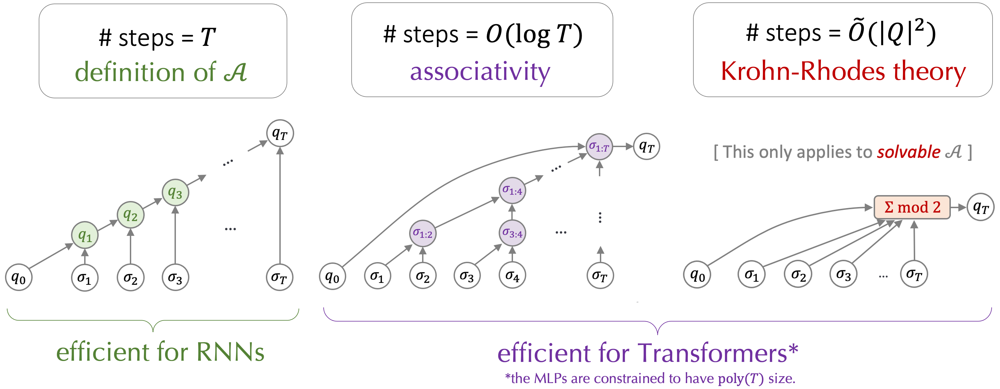
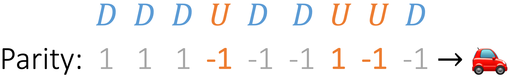

1Carnegie Mellon University,
2Microsoft Research,
3University of Pennsylvania.
TL;DR
One-sentence version: Shallow, non-recurrent Transformers can simulate the recurrent computation of finite-state automata, via counterintuitive shortcuts
using a number of layers much fewer than the number of recurrent steps.
Longer version:
Algorithmic reasoning requires capabilities which are most naturally understood through recurrent models of computation, like the Turing machine.
Transformers, while lacking recurrence, are able to perform such reasoning using far fewer layers than the number of reasoning steps.
To understand the solutions found by Transformers, we look at the setting of learning automata, and model algorithmic reasoning as simulating the computation of automata.
Our theoretical results characterize shortcut solutions, whereby a Transformer can exactly replicate the computation of an automaton \(\mathcal{A}\) on sequences of length \(T\) with \(o(T)\) layers.
By representing automata using the algebraic structure of their underlying transformation semigroups, we provide \(O(\log T)\)-depth constructions for all automata and \(O(1)\)-depth constructions for all solvable automata.

Empirically, we train Transformers to simulate a wide variety of automata, and show that shortcut solutions can be learned via standard training.
While empirical shortcuts are found to be brittle (e.g. when tested out-of-distribution), such brittleness can be mitigated when we guide Transformers to find autoregressive solutions.
title = {Transformers Learn Shortcuts to Automata},
author={Liu, Bingbin and Ash, Jordan T and Goel, Surbhi and Krishnamurthy, Akshay and Zhang, Cyril},
booktitle = {International Conference on Learning Representations},
year = {2023},
url = {https://openreview.net/forum?id=De4FYqjFueZ},
doi = {10.48550/arXiv.2210.10749},
Formalizing reasoning with automata [Back to outline]
Transformer-based large language models have made many headlines with their impressive emergent capabilities.
Many are surprised by the level of abilities of these models, often demonstrated with complex reasoning tasks.
But what does "reasoning" mean exactly? This is a complicated and somewhat philosophical question that we do not attempt to answer; instead, we focus on algorithmic reasoning, which include the abilities to parse certain structures, to infer information based on contexts, to retrieve from knowledge bases or memory, or to search for solutions.
All of these can be modeled by discrete state transitions--to see this, recall that Turing machines are universal computation models and have discrete state transitions.
In this work, we will look at a much more restrictive set of discrete-state machines, which are nevertheless interesting.
Specifically, we consider the (finite-state) automaton, denoted as \(\mathcal{A}\), which is a discrete-state dynamical system consisting of 3 parts:
the state space \(Q\) (we consider finite-size \(Q\) only), the alphabet \(\Sigma\), and the transition function \(\delta\).
At each time step \(t\), \(\delta\) takes in the previous state \(q_{t-1} \in Q\) and the current input \(\sigma_t \in \Sigma\), and transitions to the next state \(q_t\).
That is,
\[\mathcal{A} := \{Q, \Sigma, \delta\}, \quad \delta(q_{t-1}, \sigma_t) = q_t \text{, where } q_{t-1}, q_t \in Q, \sigma_t \in \Sigma \text{, starting from some } q_0 \in Q.\]
Technically speaking, the above is a semiautomaton, since an automaton additionally includes an output function which tells if a state is an acceptance state or not, whereas a semiautomaton is only concerned with the underlying dynamics of the states, which is our focus in this work.
In the following, we will use the word "automaton" and "semiautomaton" interchangably, both referring to the dynamics of states, rather than the acceptane status.
A simple example of \(\mathcal{A}\) is what we call the "parity counter": it's a two-state machine, i.e. \(Q = \{0, 1\}\), with 2 inputs \(\Sigma = \{0, 1\}\).
The transition functions is defined as \(\delta(q_{t-1}, \sigma_t) = q_{t-1} \oplus \sigma_t \) where \(\oplus\) denotes the XOR operator.
That is, if \(\sigma_t = 1\) then we change the state as \(q_{t} = 1-q_{t-1}\), otherwise the state is unchanged.
Figure 1: Example of \(\mathcal{A}\): the parity counter: this is a simple but important example
and will
show up repeatedly in the following.
Though the parity counter may seem toyish, it turns out to be a key building block for the Transformer solutions we will see later (think of it as the prime number 2: simple but important).
Moreover, despite restricted with a finite state space, finite-state automata can model complex objects (e.g. the Rubik's cube!) and subsumes many tasks in prior work, such as arithmetics [Nogueira et al. 21], regular languages ([Bhattamishra et al. 20]), and hierarchical languages (e.g. Dyck [Yao et al. 21]) with bounded depth.
Reasoning task: simulating \(\mathcal{A}\)
Now that we have formulated the reasoning process as transitions in a finite-state machine \(\mathcal{A}\), we can model "learning to reason" as simulating the computation of \(\mathcal{A}\).
More precisely, "simulating" means learning the sequence-to-sequence function given by \(\mathcal{A}\): for a given sequence length \(T\) and some initial state \(q_0 \in Q\), we want to learn the mapping between an input sequence \(\sigma_1, \sigma_2, \cdots, \sigma_T\) to the sequence of states \(q_1, q_2, \cdots, q_T\) which \(\mathcal{A}\) goes through upon seeing the inputs.
Note that there are usually multiple ways to simulate \(\mathcal{A}\). Take the parity counter as an example, there are at least 2 ways to simulate it.
The first is an iterative solution, where we simply apply the definition of the transition function \(\delta\) and computes \(q_t = \delta(q_{t-1}, \sigma_t) = q_{t-1} \oplus \sigma_t\).
The second is a parallel solution, where we compute \(q_t\) as \(q_t = (\sum_{\tau \leq t} \sigma_{\tau}) \text{ mod } 2 \).
It turns out that it's more natural for Transformers to learn the parallel solution.
Recall that a Transformer [Vaswani et al. 17] consists of a stack of layers, where a layer
performs simultaneous computation across all positions.
An illustration of a Transformer model: while each layer is computed sequentially, the
computation across positions within the same layer is parallel, which is a major difference from RNNs.
A crucial difference between Transformers and RNNs is whether computation across positions is parallel or not.
Let's compare these two types of models with the computation graphs for the iterative and parallel solutions:
(a) the iterative solution \(q_t = \delta(q_{t-1}, \sigma_t) = q_{t-1} \oplus \sigma_t\)
(b) the parallel solution \(q_t = (\sum_{\tau \leq t} \sigma_{\tau}) \text{ mod } 2 \)
Figure 2: Computation graphs for different solutions of parity.
We can see that the iterative solution matches well with RNNs, whereas the parallel solution is natural for Transformers, whose computation is parallel across positions and sequential across layers.
Note that for the iterative solution, the longest path (highlighted in blue) in the computation graph has length \(T\), whereas the longest path in the parallel solution is of length 1.
We consider the length of the longest path in the computation graph as the number of sequential steps.
For simulating \(\mathcal{A}\) on sequences of length \(T\), solutions that require \(o(T)\) (i.e. sublinear in \(T\)) number of sequential steps are called shortcut solutions, or simply "shortcuts".
It may be helpful to clarify about the word "shortcut", which usually has a negative connotation in the literature.
For example, it has been used to refer to unintended/unwanted solutions, such as those depending on "spurious correlations" (e.g. classifying a cow based on the color of the grass background).
Our definition of "shortcut" is different: in this work, "shortcut" refers to the property that a simulation of \(\mathcal{A}\) requires fewer sequential steps than the length of the reasoning chain.
In other words, shortcuts in this work are not only not negative, but are also desirable for computation reasons.
Given the recurrent nature of the reasoning task, it may not be obvious apriori why we can always hope for shortcuts.
The answer turns out to rely on a single property: associtiativity.
Recall that our goal is to simulate \(\mathcal{A}\), that is, to learn the mapping \(F_T := \delta(\cdot, \sigma_T) \circ \delta(\cdot, \sigma_{T-1}) \cdots \circ \delta(\cdot, \sigma_2) \circ \delta(\cdot, \sigma_1)\), such that \(q_T = F_T(q_0)\).
That is, we need to learn the composition of functions \(\delta(\cdot, \sigma): Q \rightarrow Q\), which is a partial application of \(\delta\) on an input \(\sigma\).
For a finite \(Q\), such functions can be represented as matrices.
For instance, for parity, \(\delta(\cdot, 0) = \begin{bmatrix}1 & 0 \\ 0 & 1\end{bmatrix}\) and \(\delta(\cdot, 1) = \begin{bmatrix}0 & 1 \\ 1 & 0\end{bmatrix}\).
Function composition hence corresponds to matrix multiplication, which is associative.
This allows us to take a divide-and-conquer approach and build a binary tree, whose tree depth corresponds to the number of sequential steps, i.e. \(O(\log T)\) for sequences of length \(T\).
Figure 3: Associativity enables a divide-and-conquer approach. The computation can be parallized at all
positions.
This gives rise to a \(O(\log T)\)-layer Transformer implementation, where each layer simulates one level of the tree;
the formal statement is given by Theorem 1 of the paper.
As a side note, let's talk about why there's a big-Oh: if we change the binary tree to an \(k\)-nary tree, then the number of layers required will be \(\log_k T = \frac{\log 2}{\log k} \cdot \log_2 T\).
That is, the larger the value of \(k\), the fewer the number of layers required.
Why not taking \(k = T\) then, so that 1 layer suffices? The reason is that the MLP width required to implement such a \(k\)-nary node/gate grows exponentially in \(k\).
Hence if we restrict the MLP with to be polynomial in \(T\), then the number of layers has to grow with \(\log T\).
In other words, the number of layers is a meaningful complexity measure only if other parts of the Transformer are properly restricted, such as the MLP width.
What restrictions to impose is somewhat subtle; please refer to our paper for more discussions if you are interested.
Shorter shortcuts with Krohn-Rhodes
[Back to outline]
One takeaway so far is that Transformers can implement \(O(\log T)\)-layer shortcuts for simulating any \(\mathcal{A}\).
A natural next question is: is it possible to use fewer layers?
We know that the answer is positive at least for some special cases.
For example, the parallel solution of the parity counter (i.e. \(q_{t} = (\sum_{\tau \leq t} \sigma_2) \text{ mod } 2\)) can be implemented by 1 Transformer layer with uniform attention, since we only need to count the number of 1s in the input.
More generally, such 1-layer counting solution suffices when the function composition is commutative (in addition to associative), that is, \(f \circ g = g \circ f\).
In this case, the function composition is not affected by the ordering of the functions, and is affected only by the number of times each function appear in the to-be-composed sequence.
What if the function composition is not commutative then?
Decomposition: a car example
The key idea is to decompose \(\mathcal{A}\) into simpler objects, each of which has commutative compositions.
Let's demonstrate this with an example.
Imagine there is a car driving on a circular road with 4 stations.
The car can either drive forward 1 step to the next station, or stay at the current station but make a U-turn.
There are hence 8 states for the car, i.e. the product of 4 positions (stations) and 2 directions.
The input \(D\) changes the position part of the state and \(U\) changes the direction; the transition function can be defined accordingly.
Figure 4: The car-on-a-circle example: this can be modeled with a 8-state \(\mathcal{A}\), with 2
non-commutative actions.
Suppose we start with the state \(q_0 = (🚗, 0) \), and take a series of actions \(\sigma_{1:ùëá}=\) \(DDD\)\(U\)\(DD\)\(UU\)\(D\).
How can we determine the final state of the car without carrying out the actions one by one?
One observation is that to determine the direction of the car, we can ignore \(D\) and count the number of \(U\) only; that is, determining the direction is a parity task (i.e. sum-mod-2) on \(U\), which can be implemented with 1 Transformer layer as we saw earlier.

Figure 5: Car example, step 1: determining the direction of the car reduces to solving a parity task on
\(U\), ignoring \(D\). The parity task is now encoded with {1, -1}, which respectively correspond to {0, 1} in the
previous parity counter example.
Next, note that the direction of the car governs the drive action, and once we figure out the direction at each position, the position of the car can be determined by taking the signed sum of \(D\) mod 4 (since there are 4 positions), where the signs are given by the parity from \(U\).
Figure 6: Car example, step 2: determining the position of the car is the same as computing the sum of
the signed \(D\) then mod 4, where the signs are obtained by solving the parity task on \(U\).
Each of the sum-mod operation can be implemented with 1 Transformer layer: the sum is implemented with uniform attention, and the mod is computed with the MLP of the Transformer layer.
Handling the signed sum requires one extra layer, so the total number of layers is \(O(1)\), which is smaller than \(\log T\) -- in fact, it is independent of \(T\)!
Decomposition: Krohn-Rhodes Theorem
The takeaway from the car example is that if we can decompose \(\mathcal{A}\) into "simpler" objects that each can be easily simulated, then simulating \(\mathcal{A}\) is also easy.
The car example might appear to be a rare special case at first glance, but it turns out that the existence of such decomposition is surprisingly common.
Side note: results in this section applies to all solvable \(\mathcal{A}\), that is, semiautomata whose transformation semigroup contains solvable groups only.
Solvable groups are defined as the groups for which all quotients in the Jordan-Holder series are abelian.
Please see Section A.2 of our paper for a self-complete introduction to automata and (semi)groups,
as well as Definition 6 for a formal definition of solvable semiautomata.
The tools we need come from the Krohn-Rhodes Theorem, a landmark result which can be considered as a vast generalization of (the uniqueness of) prime factorization for integers to automata.
At a high level, Krohn-Rhodes decomposition theorem says that any solvable \(\mathcal{A}\) can be decomposed into 2 types of "prime factors": mod counters and memory units.
The mod counter is a generalization of the parity counter, where instead of mod-2, it can be mod-\(p\) for any prime
number \(p\).
The memory unit, also known as a reset, is a multi-state generalization of the 2-state 1-bit memory unit defined as follows:
Figure 7: 1-bit memory unit: there are 2 states and 3 actions: the actions \(\sigma_{♣},
\sigma_{♦}\) sets the state to
\(♣, ♦\) respectively (i.e. writing to the memory unit), and the no-op action \(\bot\) leaves
the state unchanged (i.e. reading from the memory unit).
Interestingly, both types of prime factors can be efficiently implemented by Transformers, using two extreme modes of self-attention.
The first mode is uniform attention, which computes the sum (scaled from the average) required by the mod counter, followed by an MLP to compute the mod.
The other mode is sparse attention, where all of the attention weight is put on the single location of the last "write" operator.
(a) The mod counter can be implemented with 1 Transformer layer with uniform attention.
(b) The memory unit can be implemented with 1 Transformer layer with sparse attention.
Figure 8: The 2 types of "prime factors" given by Krohn-Rhodes can both be implemented efficiently with self-attention.
Krohn-Rhodes tells us that to simulate \(\mathcal{A}\), it suffices to simulate both types of prime factors as well as
the mechanism by which these factors are combined together.
We have seen that each type of factors can be implemented by 1 Transformer layer, and it can be shown that the
combining steps can be implemented with a constant number of layers as well.
The overall number of combing steps can be shown to be \(\text{poly}(|Q|)\), so the total number of layers to simulate
\(\mathcal{A}\) is \(\text{poly}(|Q|)\), independent of the sequence length \(T\).
Theorem 2 in the paper provides formal statement of the results.
What we've seen so far addresses the theoretical capabilities of Transformers for simulating semiautomata, where we saw
a divide-and-conquer approach that gives a \(O(\log T)\)-layer simulator for any \(\mathcal{A}\), as well as a more
succinct \(O(\text{poly}(|Q|)\)-layer construction by Krohn-Rhodes that holds for any \(\mathcal{A}\) that is solvable.
However, it is unclear whether these solutions can be found in practice using standard training pipelines, which is the focus of this section.
Empirical setup: We train causally-masked GPT2-style models on semiautomaton data.
The setup follows the theory parts, that is, the inputs are \(\sigma_1, \sigma_2, \cdots, \sigma_T\) from the alphabet \(\Sigma\), and the outputs are corresponding states \(q_1, q_2, \cdots, q_T \in Q\) that the automaton goes through upon seeing the inputs, starting from some \(q_0 \in Q\) that is fixed for sequences from the same automaton.
1. Can shortcuts be found in practice?
Table 1: Accuracy for different \(\mathcal{A}\) (row) across different Transformer depth (column),
where lighter color corresponds to better accuracy.
Results are the max over 20 random runs.
The most basic empirical question is, whether training on finite samples can find good solutions for simulating
\(\mathcal{A}\) at all.
To study this, we train GPT-2 style Transformers on semiautomata data, where the model takes as inputs sequences of
\(\sigma_1, \sigma_2, \cdots, \sigma_T \in \Sigma\), and trains to predict the corresponding states \(q_1, q_2,
\cdots, q_T \in Q \), for different choices of \(\mathcal{A} = (Q, \Sigma, \delta)\).
Table 1 shows the results for 19 different \(\mathcal{A}\) across 16 choices of Transformer depth, giving a positive answer to our question.
Moreover, the number of layers required to achieve good performance roughly follows the depth of decomposition understood by theory.
At the top part of the table we have some "simple" automata, such as Dyck and cyclic groups, which can be simulated with \(O(1)\) layers.
On the bottom we have some more complex automata, such as the quaternion group \(Q_8\) (whose decomposition requires going through the wreath product), the alternating group \(A_5\) (which is the smallest non-solvable group), and the symmetric group \(S_5\) (which is \(NC^1\) complete).
The results also highlight some challenges.
The first is training instability. Take cyclic groups (e.g. parity/\(C_2\)) as an example, even though 1-layer Transformers suffice in theory, their empirical performances are often low.
The better performance of deeper Transformers is not explained by our representationabl results and can be a goal for future investigations.
Secondly, solutions found in practice do not necessarily follow our theoretical constructions.
Hence understanding these empirical solutions can be an interesting next step.
Towards this, let's see an example on the 1d gridworld automaton.
1.1. Case study: 1d gridworld with \(O(1)\)-layer solution
As discussed earlier, there's no guarantee that solutions found in practice follow the Krohn-Rhodes construction.
In the following, we'll see an example where Transformer learns a solution that's even shorter than what's given by Krohn-Rhodes.
Let's consider the gridworld automata, a classic setup commonly used in reinforcement learning.
In the following, we will focus on the 1d version of the gridworld, which consists of \(n\) states on a 1d line.
There are 2 actions, going left or right, which updates the state to the left or right by 1 step, except when it's already at the leftmost or rightmost boundary (i.e. state 1 or \(n\)), in which case the action does not change the state.
Figure 9: An exampe of 1d gridworld with \(n=4\), starting with \(q_0=1\); some boundary states are highlighted
with yellow circles.
For gridworld, the effect of a sequence of actions depends the starting state.
For example, if we start at state 1, then the sequences LLRR and LRLR will end in different states;
but if we start at state 3, then these two sequences will lead to the same final state.
This might lead to a (false) intuition that in order to determine the final state, it is necessary track the state at each time step, making a parallel solution seem unlikely.
Of course, noticing that gridworld is solvable, Krohn-Rhodes already guarantees a parallel solution of \(\tilde{O}(|Q|^2) = \tilde{O}(n^2)\) sequential steps.
What surprised us is that GPT2 found a \(O(1)\)-layer solution, independent even of \(n\).
The key idea of this succinct solution is that at each step, we want to identify the last time that we hit a boundary state (i.e. state 1 or state \(n\)).
Why is this helpful? Because if we don't hit any boundary, then the position can be simply determined by the sum of actions (let L correspond to -1 and R to 1), which is implementable with 1 layer of uniform attention.
Figure 10 shows some evidence that Transformer indeed learns these boundary detectors (and such mechanistic understanding [Nanda et al. 23] helped us find an exact algorithm in Theorem 3 of the paper --
it figured this out before us 🤖), where the model puts all attention weight of a row at a single location, which is exactly where the last boundary state is.
Figure 10: Row-normalized causal attention maps from the last layer of a 4-layer GPT2 model.
The white/gray dots mark the positions where the state is in \(\{1, n\}\).
The bright yellow cells mean that the attention of a row concentrates at a single position, which coincides with the positions of boundary states.
2. Are shortcuts strictly better than iterative/autoregressive solutions?
While shortcuts and iterative/autoregressive solutions are both valid solutions for simulation automata, shortcuts have the additional advantage that the amount of computation grows more slowly with the sequence length \(T\).
Moreover, these shortcuts are not hard to find in practice.
Does this mean we should always prefer shortcuts then?
Well, maybe not.
One thing you may have noticed is that the experiments we have seen are a bit idealized, in the sense that the training signals are clean and fully available, and the testing distribution is exactly the same as the one during training.
What would happen if either training or testing become less ideal?
As we will see next, despite the good in-distribuion performance, less ideal setups--including limited supervision and OOD testing--expose the brittleness of these empirically found shortcuts.
2.1. Brittleness when trained with limited supervision
Figure 11: Training with incomplete supervision, where \(q_t\) is revealed with different probability.
A natural way to make training harder is to reduce the amount of supervision.
We do this in two ways: 1) Indirect supervision, where instead of seeing \(q_t\), we train and test on a function of \(q_t\).
2) Incomplete supervision, where instead of seeing \(q_t\) for every \(t\), we reveal \(q_t\) only with some probability \(p_{\text{reveal}} \in (0,1)\).
For indirect supervision, Transformers are able to learn well for all cases that we checked, and we refer the readers to Section 5.1 of our paper for details.
However, Transformers struggle under incomplete supervision.
Figure 11 shows experiments on length-100 sequences from the symmetric group \(S_5\).
Transformer becomes harder to train as the supervision signal gets sparser, while LSTM gets 100% accuracy in all cases.
Why does LSTM (or RNNs in general) perform so well?
This is likely because the recurrent computation of LSTM fits better with the recurrence structure in automata, as we will discuss later.
2.2. Brittleness when tested out-of-distribution
Let's go back to the parity example for OOD robustness.
We train the model on sequences of length 40, where each token in the sequence has an equal probability of being 0 or 1, i.e. \(p(\sigma=1) = 0.5\).
At test time, we check the performance on sequences of the same length, but with different number of 1s.
Before seeing actual results, we can already spot some potential failure modes of the shortcut solution given in theory.
Recall that the parallel solution of parity computes \(q_t = (\sum_{\tau \in [t]} \sigma_\tau) \text{ mod } 2\), where the mod is computed by MLP.
We know that MLP with relu activation cannot generalize nonlinearly outside the range that it is trained on [Xu et al. 20].
Hence it's reasonable to expect that the model will struggle at unseen or less commonly seen values of \((\sum_{\tau \in [t]} \sigma_\tau)\).
Figure 12: Testing OOD: for parity, the model is trained on sequences of length 40 with
\(p(\sigma=1)=0.5\) (i.e. the expected number of 1s is 20, marked by the gray line), and evaluated on length-40
sequences containing different number of 1s.
As seen in Figure 12, this is indeed what happens in practice.
During training, the number of 1s in a length-40 sequence concentrates around 20.
At test time, the model performance degrades significantly when the number of 1s deviates from 20, as shown by the dark blue line in Figure 12.
The poor performance at the upper tail is expected, since these higher values are less commonly seen in the training sequences.
However, the model should have seen the small values of number of 1s from subsequences; then why is the performance still low?
A potential reason is that the model has learned to leverage the correlation between the position (provided by positional encodings) and the number of 1s till this position, and hence struggles when such correlation is broken at test time.
This hypothesis is supported by the fact that when we train the model with randomly shifted position encodings, the performance at the small values of \((\sum_{\tau \in [t]} \sigma_t)\) is much better, as shown by the light blue line in Figure 12.
2.3. Autoregressive solutions as mitigation
Figure 13: When a Transformer is made autoregressive using scratchpad, it can achieve perfect OOD performance like LSTM.
The results are with parity, where \(P(\sigma=1)\) is 0.5 during training and is varied at test time.
Finally, we show that these problems can be circumvented with the autoregressive mode of Transformer:
Instead of predicting \(\{q_t\}\) for all \(t\) at once, we use the idea of scratchpad [Nye et al. 21] and train the Transformer to predict \(q_t\) one at a time, taking previous states \(\{q_{\tau}\}_{\tau < t}\) as input.
We also add recency bias [Press et al. 21] to encourage the model to depend more on the more recency past.
Scratchpad with recency biases helps guide the Transformer to learn an iterative/autoregressive solution, where each step tries to compute \(\delta\).
As shown in Figure 13, this resolves the aforementioned OOD generalization failure of Transformer.
However, the autoregressive solution is no longer a shortcut, and we loose the benefit of parallelism.
Can we develop robust shortcuts?
As discussed earlier, shortcuts are computationally appealing because it has a better dependency on the sequence
length.
However, in the automata simulation experiments, iterative/autoregressive solutions consistently outperform empirically-found shortcuts in terms of robustness.
This is potentially due to the more favorable recurrent inductive bias [Abnar et al. 20], which by being sequential and recursive in nature, matches more naturally with the recurrence structure of automata.
Developing better generalizing shortcuts might require incorporating such inductive biases and is an interesting future direction.
References
Ashish Vaswani, Noam Shazeer, Niki Parmar, Jakob Uszkoreit, Llion Jones, Aidan N. Gomez, Lukasz Kaiser, Illia Polosukhin: Attention Is All You Need